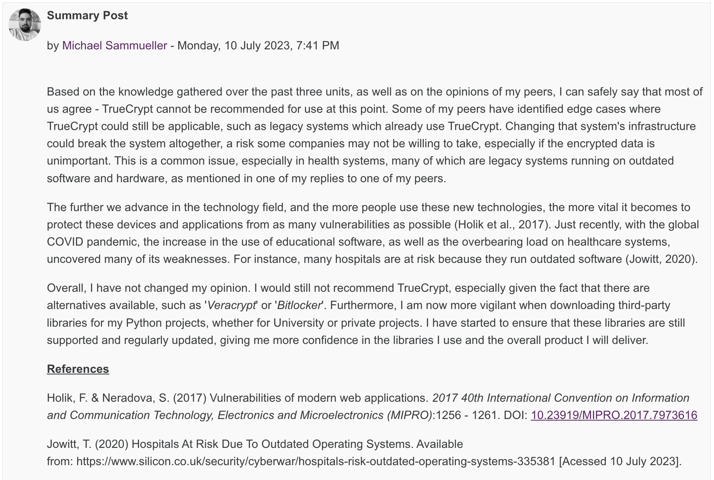
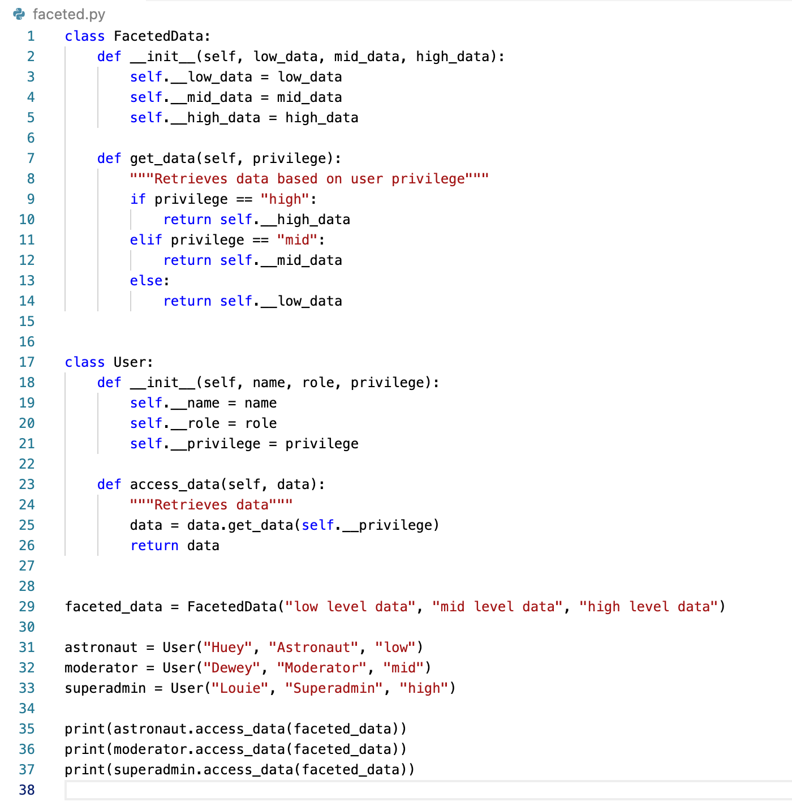
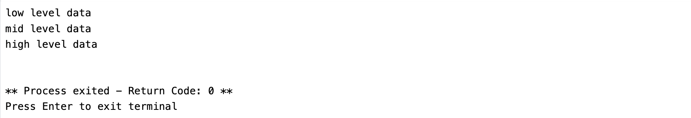

Unit 10: Artefacts
TrueCrypt Discussion Summary Post
We were tasked to write a summary post based on the feedback from our peers and the tutor, as well as the knowledge gathered during the previous units:
Faceted Data
The article by Schmitz et al (2016) presents an interesting idea, where sensitive data, or data in general, is presented to each user differently, depending on their assigned privileges. Contrary to other popular forms of access control, information is not being hidden from the user, but specific "facets" of this information is displayed, based on the privileges of the observer.
Pros:
- Data is not hidden completely, removing the risk of altering or otherwise negatively influencing user experience
- Facets of data are dynamically presented to the user, instead of being completely hidden or completely visible based on user privilege
Cons
- "Faceted Data", as a concept, seems somewhat complicated or complex, especially to users not familiar with the concept
- Might affect performance in larger systems with large user base or large data set
Overall, I would say that this is a very interesting approach to access control; one that I was not familiar with prior to reading this article. The same concept can be applied to error handling, as was done by Narala (2015) in their Master's thesis, where they introduce "Faceted Exception Handling" to ensure dynamic information flow. When an application experiences an error, it might accidentally leak sensitive information in its error messages, which could be prevented using the same principles as discussed by Schmitz et al (2016).
References
Schmitz, T., Rhodes, D., Austin, T. H., Knowles, K. & Flanagan, C. (2016) Faceted Dynamic Information Flow via Control and Data Monads. Proceedings of the 5th International Conference on Principles of Security and Trust 9365: 3-23. Available from: http://kennknowles.com/research/schmitz-rhodes-austin-knowles-flanagan.post.16.faceted.pdf [Accessed 5 July 2023].
Narala, S. T. (2015) Introducing Faceted Exception Handling for Dynamic Information Flow. Masters Thesis. San Jose State University. Available from: https://scholarworks.sjsu.edu/etd_projects/406/ [Accessed 5 July 2023].
Implementation in Python
To implement such a concept in Python, and keeping within the object-oriented paradigm, I would create a class which can store the various facets of a specific piece of data, as well as methods to retrieve such data based on the users privileges. I would then attempt to create internal logic that calls upon said methods based on which type of user is currently logged into the system, and ensure that the correct "facet" is displayed.
In the context of my team's project, which is to create a health monitoring application for astronauts on the ISS, we also require some form of access control. We have three roles within our system:
- Astronaut
- Moderator
- Superadmin
These roles have different privileges, meaning the way they interact with the system depends on their role/privilege. I have created a small prototype below, which represents how we could use "faceted data" within our application.
 